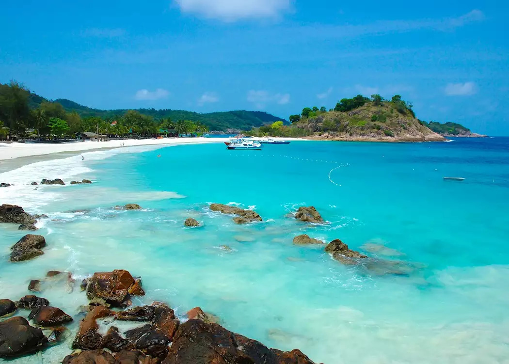

Redang Island, Kuala Terengganu

Redang Island is an island in Kuala Nerus District, Terengganu, Malaysia. It is one of the largest islands off the east coast of Peninsular Malaysia. It is one of nine islands that made up an eponymous marine sanctuary park offering snorkeling and diving opportunities for tourists. White sandy beaches, crystal clear blue sea, brilliant underwater world. White sandy beaches, crystal clear blue sea, brilliant underwater world. Redang archipelago comprises 9 islands (Lima Island, Paku Besar Island, Paku Kecil Island, Kerengga Besar Island, Kerengga Kecil Island, Ekor Tebu Island, Ling Island, Pinang Island and the main Redang Island) that abound with marvelous marine fishes, turtles and coral reefs that ensure great snorkelling and scuba-diving.